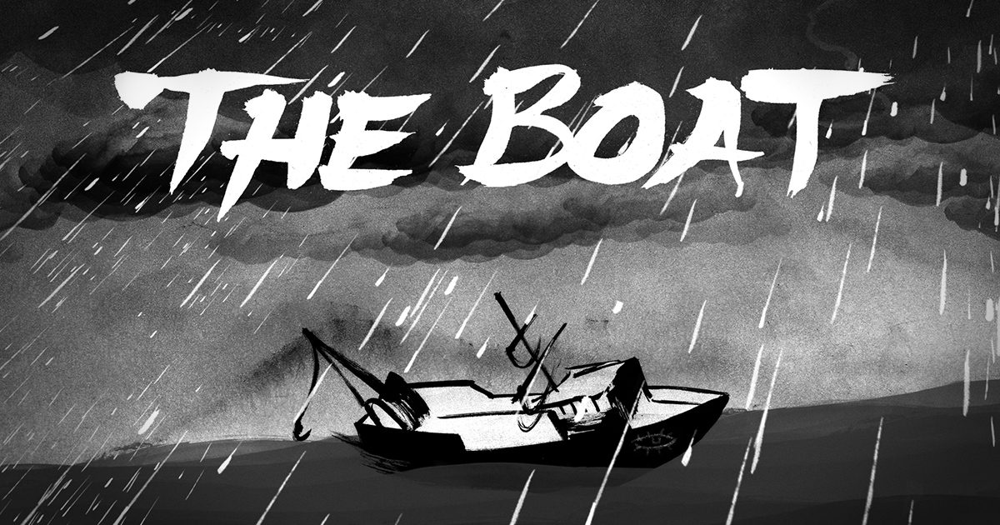

Welcome to my website on how the movie “Lion” and the interactive website “The Boat” have harnessed the potential of modern communication technologies to bring unknown or unrealised events to life for modern Responders.
Text 1: "Lion" (Movie)
The movie “Lion” is a movie based on a true story, which follows the story of a young boy, Saroo Brierley. Being Separated early on in the movie Saroo had to battle many hardships and was eventually adopted by an Australian couple. As the years pasted by his connection with his heritage and roots no longer existed. Until 25 years later when he was met with the memory of jalebis from a friends party did his connection with his past start to flow in. This is when Saroo opens up Google maps and begins to search for his home town with the little fragmented memories he still had left. Below is a short video clip you can watch of Saroo finding his home with google maps.
In the scenes coming to Saroo’s eventual discovery of his home town, a scene of him zooming out from google earth shows the countless little markers he has put up during his search for his home, this brings the unknown event of the world being massive and easily to get lost to the viewer of the movie. Even though technology has advanced to the point where the world has been mapped, the reader and Saroo still can’t forget the sheer size of the world, and the problem of how easily people can get lost and how quickly small distances can become large ones as you move around the globe.
Google Maps/Earth in the movie shows the potential of modern technology in aid of search and how resources for looking at every part of the world has advanced but has also brought the unthought-of event of the world being so large despite the technologies and that technology though can help it doesn’t always immediately solve any problem it is faced with.
Text 2: "The Boat" (Interactive Webpage)
The story of “The Boat” is an interactive graphic novel that animates the life of Vietnamese refugees and their troubles and hardships of a young girl Mai as she travels across the ocean as a refugee. This story is adapted from the short story by SBS Australia, and combines captivating visuals as well as interactive elements to draw the readers in and make it more personal than a usual story might be for the narrator, bringing unknown events to life for modern readers.
The clip above is an example of some of the interactive and immersive experiences the webpage provides. The sharp animations and music of the sea splashing, provide another dimension for viewers too see the story in. The effects almost create a similar atmosphere to as if you were in a boat during a stormy night and allow the viewers to further sympathise with the troubles of the main character. The use of advanced modern web technologies such as HTML5, CSS3, and Javascipt, bring to life the history of Vietnam amidst the war and the unkown/unrealised event.

Overall “The Boat” correctly and stylistically leverages the power of digital communication to bring a new perspective to historical events for modern audiences, which is beyond the normal media outlets offered to people, by mixing multimedia elements and rich and powerful story, it leaves the audience with an everlasting experience.
Conclusion
To conclude both “Lion” and “The Boat” showcase how the use of modern communications technologies can bring unknown or unrealised events to life for modern responders, by Leveraging the capacity of film and interactive media, these two examples of texts give a boundless experience of new possibilities that technology brings to express stories to mass audiences and can be used as a connection between the viewer and the stories and experiences being conveyed which otherwise may have been more distance or forgotten afterward.